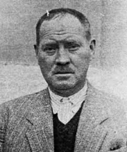

Halil Ýbrahim Çöllüoðlu [1889-1963]

Milaslý âlim ve þair bir zat. Bediüzzaman Hazretleri, kendisini "Risale-i Nur'un demir gibi metin ve sarsýlmaz bir þakirdi" olarak tarif eder ve Milas için "O kasaba onunla iftihar etmeli" der. Eskiþehir ve Denizli hapislerinde Bediüzzaman ile beraber yattý. Her iki hapis macerasýný da uzun birer þiirle tafsilâtlý bir þekilde anlattý. Lahikalarda birçok mektubu yer aldýðý gibi, pek çok mektupta da adý geçmektedir. (Kaynak: Barla Blatformu Kataloðu)
| · | Halil Ýbrahim’in, Risale-i Nur hakkýnda gayet tatlý ve güzel ve mutabýk temsili ve tavsifi, içinde samimî ihlâsýndan ve kanaatýndan geldiði cihetle, bizce gayet parlak ve edîbâne düþmüþ. Risale-i Nur’a ait kýsmýný Lâhikaya yazacaðýz. Hakikaten, Risale-i Nur’un mühim ve sebatkâr ve daimî bir rüknü olduðuna þüphe kalmamýþ. Ona ve rüfekasýna her gün hususî dualarýmýza, kazançlarýmýza, hususan Ýnce Mehmed hissedar olmalarýný ve selâmýmýzý teblið edersiniz. (Kastamonu) |